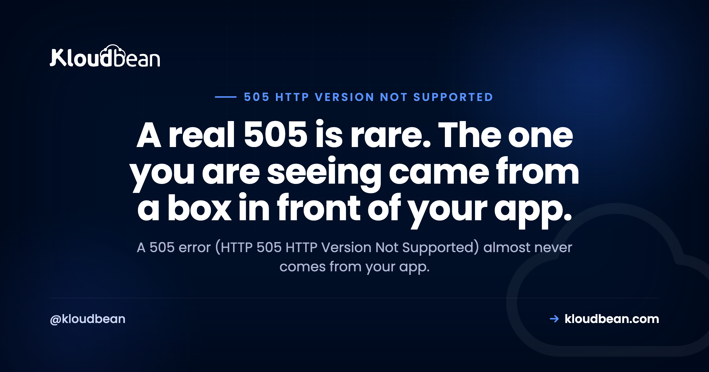

505 Error: HTTP Version Not Supported, and Which Layer Sent It

A 505 error, HTTP 505 HTTP Version Not Supported, is one of the rarest status codes you will meet in the wild, and that rarity is exactly why it trips people up. The literal meaning is narrow: a server refusing the HTTP protocol version in your request. But the 505 error code you are actually staring at almost never comes from your application deciding it dislikes HTTP/1.1. It comes from a proxy, a WAF, a CDN, or a load balancer sitting in front, rejecting the request before your app is ever consulted. So the first move is not a fix. It is working out which box in the chain answered.
HTTP 505 means a server in the request path refuses the HTTP version it was handed. A genuine 505 from an origin application is uncommon, because real servers negotiate versions and fall back to HTTP/1.1 rather than refusing outright. In practice a 505 error is emitted by a reverse proxy, a WAF rule, a CDN, or a load balancer reacting to a protocol version or a malformed request line. Reproduce it with curl while forcing a version, then again while bypassing the edge, and you will see which layer sent it. Fix that layer, not your app.
What a real 505 error means, and why you rarely see one
Start with the definition, because it is the thing you are about to rule out.
Per RFC 9110, a 505 means the server does not support, or refuses to support, the major HTTP version used in the request message. That is it. Not the method, not the headers, not the body. The major version number in the request line, the HTTP/1.1 part of GET / HTTP/1.1.
Now the reason you almost never see a legitimate one. HTTP/1.1 is universal. A server that only speaks 1.0 still understands a 1.1 request and answers it. HTTP/2 is not requested in the request line at all; over TLS it is negotiated during the handshake through ALPN, so a server that does not do HTTP/2 simply keeps serving HTTP/1.1 and nobody notices. Graceful fallback is the normal path everywhere. For a server to actually raise a 505, something has to hand it a version it is configured to reject, and that is not how well behaved clients behave.
So here is the opinion this whole guide rests on. If you did not deliberately build an exotic protocol setup, the literal reading is almost certainly not your situation. Treat the 505 as a signal that a layer in front rejected the request, and go find that layer.
Which layer actually sent it
A modern request rarely touches one server. It passes through several, and each one can, in principle, answer with a 505. Classifying which box did it is the whole job.
The pattern to internalise: the closer a layer is to the client, the more likely it is the one that rejected you, because it gets first look at the raw request line and it is where security policy usually lives. Your origin app is last in line and the least likely culprit.
The decisive test: force the version and split the layers
You do not guess which layer answered. You reproduce the 505 on purpose while changing one variable at a time, and curl is the right tool because it lets you dictate the protocol version and the route.
First, pin the version. If the error follows one version and not the other, you have found a handshake or policy problem rather than anything about your content:
# Force each HTTP version and print only the status code
curl -sS -o /dev/null -w "%{http_code}\n" --http1.1 https://example.com/
curl -sS -o /dev/null -w "%{http_code}\n" --http2 https://example.com/
# Ask curl which protocol actually got negotiated
curl -sS -o /dev/null -w "%{http_version}\n" https://example.com/A 200 on --http1.1 and a 505 on --http2 is a loud, specific result. It says something in the chain accepts 1.1 and refuses the 2 handshake, which points at ALPN or a proxy that is not configured for HTTP/2. If both return 505, the version is not the variable and you should be looking at a policy rule or a malformed request line instead.
Second, split the layers. Hit the site the normal way, then resolve the hostname straight to the origin IP so the CDN and edge are skipped entirely:
# Through the edge (normal DNS)
curl -sS -o /dev/null -w "%{http_code}\n" https://example.com/
# Around the edge: resolve the hostname straight to the origin IP
curl -sS -o /dev/null -w "%{http_code}\n" \
--resolve example.com:443:203.0.113.10 https://example.com/If it is 505 through the edge and 200 straight to the origin, the edge emitted it and your app is fine. If it is 505 both ways, the edge is innocent and the proxy or the origin owns it. Two commands, and you have narrowed four suspects to one.
505 versus its neighbours
Half the confusion around this code is that three other status codes look like it from a distance. Here is what separates them, so you can confirm you are even on the right page:
| Code | What it actually says | Trigger |
|---|---|---|
| 505 HTTP Version Not Supported | The HTTP version is refused | A version the server will not serve |
| 400 Bad Request | The request is malformed | A syntactically broken request line or headers |
| 426 Upgrade Required | The server wants a different protocol | Server refuses the current one and names the wanted one in an Upgrade header |
| 431 Request Header Fields Too Large | The headers are too big | Header size, not version |
| 501 Not Implemented | The feature or method is unsupported | An unimplemented method, not a version |
The one that overlaps most is 400. A badly formed request line can be read as either a version problem or a syntax problem, and plenty of servers answer a broken line with 400 rather than 505. If the request is well formed and the version is the sticking point, 505 is the accurate code. If the line itself is garbled, expect 400. And 426 is worth a second look because it is nearly the opposite of a 505: instead of refusing your version, the server is asking you to switch to one it prefers and telling you which.
What is really emitting your 505
Now the practical list. These are the situations that actually produce the 505 error code people search for, roughly in the order they turn out to be the answer, each with the layer that owns it.
| Situation | Layer | First move |
|---|---|---|
Error only on --http2, fine on --http1.1 | Edge or proxy TLS termination | Check ALPN and the proxy HTTP/2 setup |
| Error only through the CDN, fine direct to origin | CDN or WAF | Read the edge rules and firewall log |
| Error appeared after a proxy or load balancer change | Reverse proxy or LB | Align the upstream HTTP version |
| Error from a scripted client or an old HTTP library | Client | Let the client negotiate normally |
| Error only on certain odd requests | WAF allowed-versions policy | Inspect the rule that matched |
A WAF enforcing an allowed-versions policy. The OWASP Core Rule Set, which sits behind a lot of ModSecurity deployments, ships a check that only permits a defined set of HTTP versions and blocks anything outside it. That is a sensible anomaly defence, because fuzzers and scanners love sending malformed protocol strings. But it also means a legitimate client using an unexpected version, or a request rewritten oddly by something upstream, can get bounced with a 505. Read the WAF log, find the rule that fired, and decide whether the request was actually hostile or just unusual.
A proxy speaking the wrong version upstream. This one is concrete and catches people. By default, nginx talks to upstream servers over HTTP/1.0, not 1.1, unless you tell it otherwise. Most apps tolerate that, but a backend that insists on 1.1 can refuse the older version. The fix is one directive:
# nginx talks HTTP/1.0 to upstreams unless you tell it otherwise
location / {
proxy_pass http://app_upstream;
proxy_http_version 1.1;
proxy_set_header Connection "";
}If the proxy layer is unfamiliar ground, nginx as a reverse proxy for Node walks through a correct configuration, and the version knob above is part of it.
An ALPN mismatch on HTTP/2. When a proxy terminates TLS and re-originates the connection to your app, it negotiates HTTP/2 separately on each side. Get that wrong, and a client that connected over HTTP/2 can end up talking to something that refuses it. This is the case your --http2 curl test lights up immediately.
A client library forcing an odd version. Some HTTP clients, especially older or hand-rolled ones, pin a version explicitly, sometimes HTTP/1.0, sometimes a string that is not a real version at all. A server with a strict policy refuses it. If the 505 only comes from one client and every browser is fine, this is where to look.
Fixes that cannot work, and why
These sit near the top of most search results for this error. Knowing why they are useless saves you from working through them one by one.
Clearing your browser cache. The version is decided as the connection is set up and the request line is read, before any cached asset is even consulted, and usually at a layer in front of your app. Nothing your browser has stored took part in the decision. The myth survives because a transient edge blip sometimes clears on its own, and the cache clear gets the credit it did not earn.
Reloading and waiting. Worth exactly one try in case it was a momentary edge issue. If the cause is a WAF rule, a proxy setting, or a load balancer talking the wrong version, the condition is deterministic and reloading is just a slower way of not fixing it.
Changing or redeploying your app. This is the expensive mistake. If the edge or the proxy emitted the 505, your application never received the request, so editing code, restarting the process, or shipping a new build changes nothing. You proved which layer answered with two curl commands earlier. Spend your effort there.
The anti-pattern worth avoiding
When a 505 is blocking you and a deadline is close, the tempting move is to make it disappear rather than understand it. Three versions of that, and why each one costs you later.
Forcing every client to HTTP/1.0, or switching HTTP/2 off across the board, does silence a version-negotiation 505. It also throws away the performance you turned HTTP/2 on for, and it leaves the real misconfiguration in place for the next protocol that trips it. Opening a WAF allowed-versions rule to accept anything is worse, because that rule exists to swat the exact malformed protocol strings that scanners and fuzzers throw at you, and disabling it to fix one legitimate client quietly widens your attack surface. Silencing a signal is not the same as fixing the thing it was pointing at. Localise the layer, correct the handshake or the policy, and leave the defence doing its job.
Server-side of 505 Error
The boundary first, because it is the honest part. A 505 that comes from your own application config, an intentional version restriction you wrote, is yours to fix, and no platform can make that decision for you. What a managed platform removes is the guesswork about the proxy and edge layer, and the friction of reaching the logs that tell you which box answered.
On Kloudbean the reverse proxy, nginx or Apache, is managed and patched, and configured to talk a sane HTTP version to your application rather than left as a directive you have to remember. Application and server logs sit in the same dashboard as the server, so confirming whether the proxy or your app emitted the status does not start with an SSH session and a hunt for the right path. Free SSL is issued and renewed, which keeps the TLS and ALPN side of version negotiation working without hand-tuning. There is a built-in Flexible Load Balancer you enable when you actually need it, staging for WordPress and Laravel so a config change proves itself somewhere harmless, and automatic backups behind it all. Seven cloud providers to run on, from AWS and Google Cloud to Linode, Vultr, DigitalOcean, UpCloud, and AWS Lightsail. Standard plans start at $8 a month, and it is worth checking the pricing page for current numbers. Free migration assistance is included if you are moving something that already works.

The line stays where it always is. The platform owns the server, the stack, TLS, backups and patching. Your application code and your data remain yours, and a 505 you set on purpose lives in that half.
The follow-on questions
The rest of the 5xx family starts with 500 Internal Server Error when your app runs and throws, and 502 Bad Gateway when the proxy cannot get an answer at all. At the edge, Cloudflare's 5xx codes. The closest neighbours to a 505 are 400 Bad Request for a malformed request and 431 Request Header Fields Too Large when the headers, not the version, are the problem. For the layer that usually emits a 505, nginx as a reverse proxy and nginx versus Apache. And when nothing connects at all, this site can't be reached.
Stop debugging the wrong box.
Managed servers across seven clouds with a patched reverse proxy configured to talk the right HTTP version upstream, application and server logs in one dashboard so you can see which layer answered, free SSL issued and renewed, staging for WordPress and Laravel, and automatic backups. Standard plans from $8/mo, and free migration assistance if you are moving something that already works. Start at kloudbean.com or check current pricing.
Managed proxy · App and server logs · Free SSL · Staging · Automatic backups · Seven clouds
FAQ
What does a 505 error mean?
A 505 error, or HTTP 505 HTTP Version Not Supported, means a server in the request path refuses the major HTTP version it was handed. Per RFC 9110 the server is unwilling or unable to answer using that version. In practice the code rarely comes from your own application, because real servers negotiate versions and fall back to HTTP/1.1 rather than refusing.
What causes HTTP 505 HTTP Version Not Supported?
Usually a layer in front of your app. A reverse proxy or load balancer speaking a version the origin refuses upstream, a WAF enforcing an allowed-versions policy, a CDN rejecting a malformed request line, or a scripted client sending a version no server accepts. A genuine refusal from the origin application itself is uncommon and normally deliberate.
Is a 505 error a client problem or a server problem?
It is generated by a server, but the trigger is often the client or an intermediary rather than your origin app. If a fuzzer or an unusual HTTP library sends an odd request line, the edge answers 505. If the proxy negotiates the wrong version upstream, the server side owns it. Classify the layer before you assign blame.
How do I fix a 505 error?
Find which layer answered first, then fix that layer. Reproduce with curl while forcing HTTP/1.1 and HTTP/2, and again while bypassing the CDN or proxy so you hit the origin directly. If the error only appears through the edge, fix the edge or WAF rule. If it appears when the proxy talks to the origin, align the upstream HTTP version. Changing your application code does nothing when the app never saw the request.
How do I tell which layer sent the 505?
Test through each hop and then around it. A 505 that appears through your CDN but not when you resolve straight to the origin IP was emitted at the edge. A 505 that only shows up on one forced version points at a handshake or policy mismatch. curl with the http1.1 and http2 flags, plus the resolve flag, splits the chain in a couple of commands.
Does clearing my browser cache fix a 505 error?
No. The version refusal happens as the connection is set up and the request line is read, before any cached asset matters, and usually at a layer in front of your app. Clearing the cache or reloading changes nothing when the cause is a proxy, WAF, or load balancer policy. It looks like it helps only when the problem was transient.
What is the difference between a 505 error and a 400 Bad Request?
A 505 says the HTTP version is refused. A 400 says the request itself is malformed. The two overlap because a badly formed request line can be read either way, and many servers answer a broken request line with 400 rather than 505. If the request is syntactically fine but the version is the sticking point, 505 is the accurate code.
Is 505 the same as 426 Upgrade Required?
No, they are near opposites. A 505 refuses the version you sent. A 426 tells you the server wants you to switch to a different protocol and names it in an Upgrade header, so the client is expected to retry on the new protocol. One is a refusal, the other is an instruction to upgrade.
Can disabling HTTP/2 fix a 505 error?
Sometimes it silences the symptom, which is not the same as fixing it. If forcing HTTP/1.1 clears the error, you have found the layer, not the cause. The real fix is usually correcting an ALPN or upstream-protocol mismatch, or a WAF policy, so that HTTP/2 works as intended. Turning HTTP/2 off everywhere gives up performance and hides a misconfiguration that will resurface.